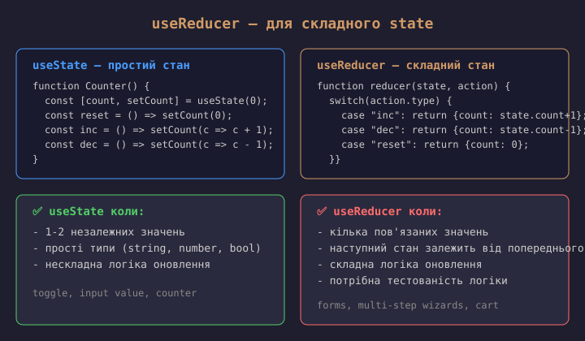
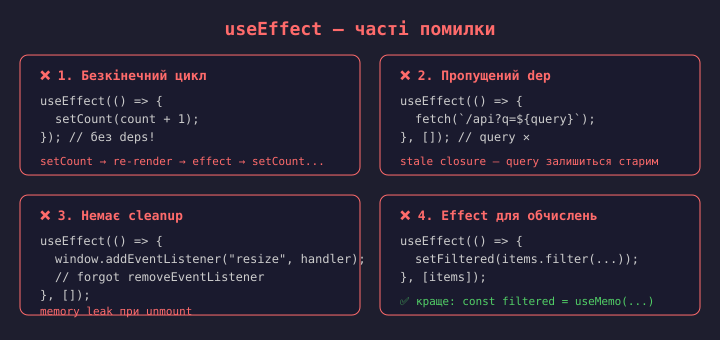
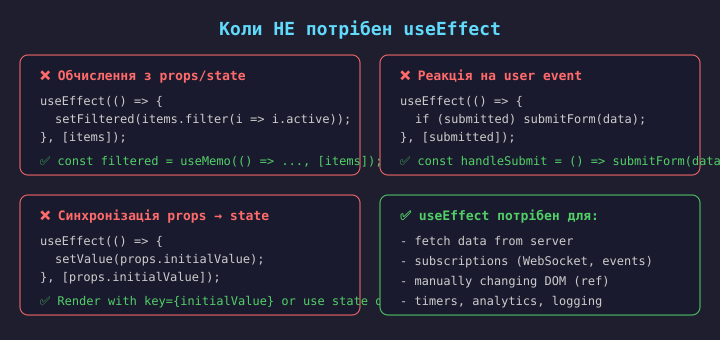
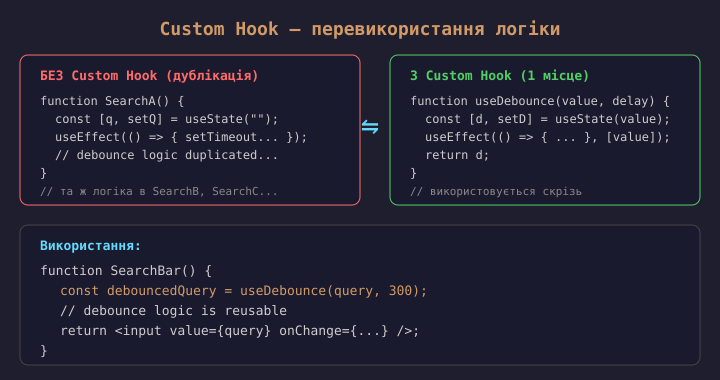

Де зберігати state? — три рівні

Правило: стан має жити як можна нижче в дереві компонентів. Піднімаймо його вгору лише тоді, коли цього потребують кілька компонентів.
Правило: стан має жити як можна нижче в дереві компонентів. Піднімаймо його вгору лише тоді, коли цього потребують кілька компонентів.
useState у цьому компоненті.useContext або зовнішній стейт-менеджер
(Zustand, Redux).
import { useState } from "react"; function TodoForm() { const [text, setText] = useState(""); const [isOpen, setIsOpen] = useState(false); return ( <form onSubmit={(e) => { e.preventDefault(); addTodo(text); setText(""); }}> <input value={text} onChange={(e) => setText(e.target.value)} /> </form> ); }
✅ useState коли:
Приклади:

// 1. Reducer function (pure) type State = { count: number; step: number }; type Action = | { type: "inc" } | { type: "dec" } | { type: "setStep"; step: number } | { type: "reset" }; function reducer(state: State, action: Action) { switch (action.type) { case "inc": return { ...state, count: state.count + state.step }; case "dec": return { ...state, count: state.count - state.step }; case "setStep": return { ...state, step: action.step }; case "reset": return { count: 0, step: 1 }; } }
// 2. Використання в компоненті function Counter() { const [state, dispatch] = useReducer(reducer, { count: 0, step: 1 }); return ( <div> <p>{state.count} (step: {state.step})</p> <button onClick={() => dispatch({ type: "inc" })}>+</button> <button onClick={() => dispatch({ type: "dec" })}>-</button> <button onClick={() => dispatch({ type: "reset" })}>Reset</button> </div> ); }
Переваги: логіка винесена з компонента, редюсер — чиста функція (легко тестувати), actions типізовані.
state.x = 5 ✗.
Завжди створюй новий об'єкт: setState({...state, x: 5}) ✓.setState. Для логіки, що залежить від
попереднього значення, використовуй функціональну форму:
setCount(prev => prev + 1).// ❌ Погано — дубльований state function ProductList(props) { const [items, setItems] = useState([]); const [visibleCount, setVisibleCount] = useState(0); // ✗ useEffect(() => { setVisibleCount(items.filter(i => i.active).length); }, [items]); }
// ✅ Добре — обчислення під час рендеру function ProductList(props) { const [items, setItems] = useState([]); const visibleItems = items.filter( i => i.active ); // або useMemo для дорогих обчислень const sorted = useMemo( () => [...items].sort(...), [items] ); }
Якщо значення можна отримати з існуючого state/props — обчислюй його
під час рендеру. useMemo — лише для дорогих обчислень.

Якщо два дочірніх компоненти потребують одні й ті ж дані → стан піднімається до їх спільного батька.
Алгоритм:
useState.Це основний механізм React для спільного стану.
Аналог у Vue — provide/inject або спільний reactive-об'єкт.

Props drilling — коли дані передаються через кілька рівнів компонентів, які їх не використовують, лише щоб доставити їх глибше.
Рішення: Context API, композиція компонентів, стейт-менеджери (Zustand, Redux), або винесення логіки в Custom Hooks.

// 1. Створити Context import { createContext, useContext, useState, type ReactNode } from "react"; type User = { name: string; role: string }; const UserContext = createContext<User | null>(null); // 2. Provider — обгортає дерево і дає значення function App() { const [user, setUser] = useState<User>({ name: "Anna", role: "admin" }); return ( <UserContext.Provider value={user}> <Layout /> </UserContext.Provider> ); } // 3. Consumer — читає значення в будь-якому місці всередині Provider function UserProfile() { const user = useContext(UserContext); if (!user) return <p>Not logged in</p>; return <p>Hello, {user.name} ({user.role})</p>; }
Аналог у Vue — provide / inject. Context ідеальний для
глобальних даних, які рідко змінюються (theme, locale, auth).
Проблема: коли значення Context змінюється — всі компоненти,
що викликають useContext, перерендеряться, навіть якщо їм
потрібна лише частина значення.
Рішення:
value={useMemo(...)};Context — не заміна для всього стану. Використовуй для статичних/рідкісних даних (auth, theme, config).
// Замість props drilling — передаємо готовий елемент через children/props function App() { const [user, setUser] = useState({ name: "Anna" }); return ( <Layout sidebar={<UserProfile user={user} />} // відразу передаємо header={<Header user={user} />} /> ); } function Layout(props: { sidebar: ReactNode; header: ReactNode }) { return ( <div> {props.header} <main>{props.children}</main> {props.sidebar} </div> ); // Layout не знає про user взагалі! }
Патерн «composition» — передавати готові елементи, а не сирі дані.
Layout залишається агностичним до user. Аналог у Vue — <slot>.
Context + useReducer — вбудований інструмент React для спільного стану. Підходить для низькочастотних даних (theme, auth, locale).
Коли Context стає вузьким місцем (часті оновлення, складні залежності, серверний стан) — використовують зовнішні стейт-менеджери:
📚 Детально ці інструменти розглянемо в Лекції 6: State Management та Production React.
Правило: починай з useState + Lifting State Up.
Додавай Context коли props drilling стає проблемою.
Стейт-менеджери — лише коли Context вже не справляється.
Чиста функція — функція, яка для однакових вхідних даних завжди повертає однаковий результат, без побічних ефектів.
Компоненти React мають бути чистими функціями від props та state:
UI = f(props, state).
Side effect (побічний ефект) — будь-що, що виходить за межі чистої функції:
React дає useEffect для ізоляції side effects від фази рендеру.


// 1. Fetch data on mount useEffect(() => { let cancelled = false; fetch("/api/user") .then(r => r.json()) .then(data => { if (!cancelled) setUser(data); }); return () => { cancelled = true; }; }, []);
// 2. Subscribe to event useEffect(() => { const handler = () => setWidth(window.innerWidth); window.addEventListener("resize", handler); return () => window.removeEventListener("resize", handler); }, []);
// 3. React to prop/state change useEffect(() => { document.title = `User: ${user.name}`; }, [user.name]); // тільки при зміні name // 4. Timer with cleanup useEffect(() => { const id = setInterval(() => { setTime(new Date()); }, 1000); return () => clearInterval(id); }, []);
// 5. Fetch when query changes useEffect(() => { fetchResults(query).then(setResults); }, [query]); // dep!


useEffect
useLayoutEffect
Правило: завжди починай з useEffect. Переходь на
useLayoutEffect лише якщо бачиш візуальне мигання
(flicker) при оновленні DOM.

Custom Hook — це JavaScript-функція, ім'я якої починається з use,
і яка може викликати інші Hook-и.
Конвенції:
use (useFetch, useToggle, useLocalStorage);useState, useEffect, інші hooks;Аналог у Vue — Composables (useMousePosition, useFetch).
// hooks/useToggle.ts import { useState, useCallback } from "react"; export function useToggle(initial: boolean = false) { const [value, setValue] = useState(initial); const toggle = useCallback(() => { setValue(prev => !prev); }, []); const setTrue = useCallback(() => setValue(true), []); const setFalse = useCallback(() => setValue(false), []); return { value, toggle, setTrue, setFalse }; }
// Використання import { useToggle } from "./hooks/useToggle"; function Modal() { const { value: isOpen, toggle, setFalse: close } = useToggle(false); return ( <> <button onClick={toggle}> Open </button> {isOpen && <Dialog onClose={close} />} </> ); }
// hooks/useDebounce.ts import { useState, useEffect } from "react"; export function useDebounce<T>( value: T, delay: number ): T { const [debounced, setDebounced] = useState<T>(value); useEffect(() => { const timer = setTimeout(() => { setDebounced(value); }, delay); // cleanup: скидає таймер // при кожній зміні value return () => clearTimeout(timer); }, [value, delay]); return debounced; }
// Використання: пошук з дебаунсом function SearchInput() { const [query, setQuery] = useState(""); const debouncedQuery = useDebounce(query, 300); useEffect(() => { if (debouncedQuery) { console.log("Search: ", debouncedQuery); // тут буде API-виклик // (детально — Лекція 3) } }, [debouncedQuery]); return ( <input value={query} onChange={(e) => setQuery(e.target.value)} placeholder="Search..." /> ); }
useDebounce — класичний Custom Hook: state + effect + cleanup.
Значення оновлюється лише після delay мс тиші.
Cleanup скидає таймер при кожній зміні value.
import { useState, useEffect } from "react"; export function useLocalStorage<T>( key: string, initial: T ) { const [value, setValue] = useState<T>(() => { const stored = localStorage.getItem(key); return stored ? JSON.parse(stored) : initial; }); useEffect(() => { localStorage.setItem(key, JSON.stringify(value)); }, [key, value]); return [value, setValue] as const; }
// Використання function Settings() { const [theme, setTheme] = useLocalStorage("theme", "light"); const [lang, setLang] = useLocalStorage("lang", "uk"); return ( <div> <select value={theme} onChange={(e) => setTheme(e.target.value)}> <option>light</option> <option>dark</option> </select> </div> ); }
| Hook | Призначення |
|---|---|
useToggle |
Бінарний стан (open/closed, on/off) |
useFetch |
Завантаження даних з API (loading, error, data) |
useLocalStorage |
Стан, синхронізований з localStorage |
useDebounce |
Дебаунс значення (пошук, input) |
useWindowSize |
Розмір вікна (resize listener) |
usePrevious |
Попереднє значення prop/state |
useMediaQuery |
Реакція на CSS media query |
useClickOutside |
Клік поза елементом (modals, dropdowns) |
Готові бібліотеки: react-hooks.org, usehooks.com, react-use.
src/ ├── components/ # UI │ ├── Button.tsx │ ├── Modal.tsx │ └── index.ts ├── features/ # за доменами │ ├── auth/ │ │ ├── LoginForm.tsx │ │ ├── useAuth.ts │ │ └── authApi.ts │ └── products/ │ ├── ProductList.tsx │ └── useProducts.ts ├── hooks/ # спільні hooks │ ├── useFetch.ts │ └── useToggle.ts ├── context/ # Context providers │ └── ThemeContext.tsx ├── utils/ ├── types/ ├── App.tsx └── main.tsx
За типовими принципами:
Кожна feature містить свої компоненти, hooks, API-виклики — feature-first структура.